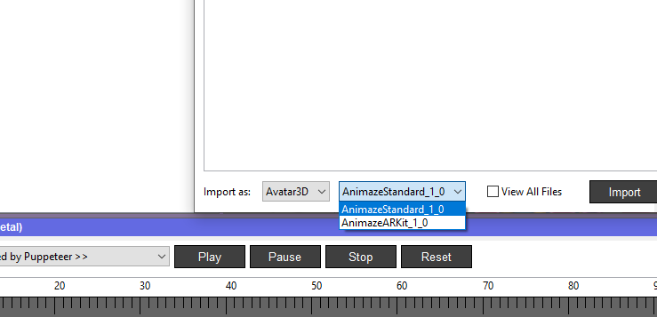
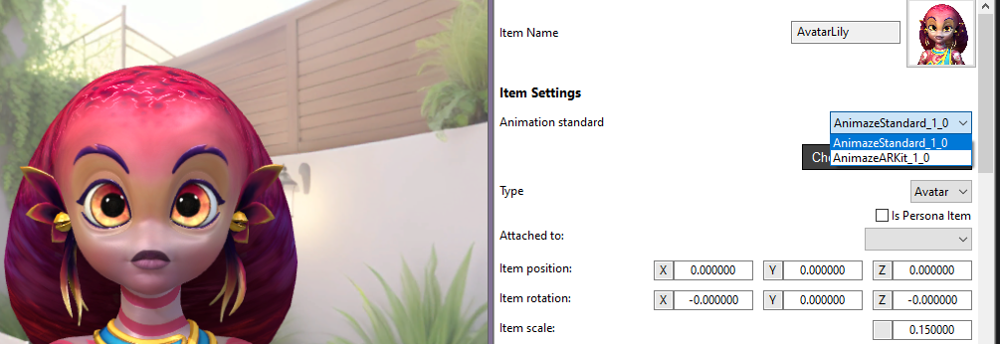

About
This document serves as a supplementary resource connected to the .avatar Technical Documentation. It provides detailed descriptions of skeletal animations, blendshape animations, and visemes, that are used/required on the Animaze FBX import pipeline, illustrated with text and images.
It is important to remember that Animaze supports several animation standards for 3D avatars.
Specifically, for avatars imported via the FBX pipeline, you have:
- Animaze animation standard and
- The Arkit-based animation standard.
These two have different source data requirements.
Note: If you use GLB assets or VRM assets (whether they are Vroid VRMs or PerfectSync VRMs) the below information does not apply directly to you, as GLB and VRM have different requirements. Read more about how to build GLB and VRM assets that will work in Animaze here [Link to GLB section] and here [Link to VRM section].
Back to FBX assets, key points to note for the two animation standards available for the FBX import pipeline are:
-
Both animation standards available for FBX files may use a combination of skeletal (joint-based) animations and blendshapes to animate an avatar.
-
For the Animaze standard, skeletal (joint-based) animations and blendshapes can be used to drive both the body and/or the face.
-
For the Arkit animation standard, there is a clearer distinction, as here the skeletal (joint-based) animations are used mainly for the body and the rigid head motion, and the standard Apple Arkit blendshape set is used for the face expressions (skeletal animation counterparts for the blendshapes in the Arkit set are not required or needed).
-
Animaze standard animations are easier to overlap/combine in a controlled way because they are more granular, they provide actions for each pose of the avatar (e.g., mouth closed smile and mouth open smile).
-
The ARKit standard, developed by Apple, requires a more experienced artist, because the blendshapes can combine additivelly and are not as granular, so the combined results are harder to control. It is however widely used and well documented by Apple. Note that for ARKit standard in Animaze on the FBX pipeline, you will still need to create body, head, and brow animations based on the Animaze standard. Additionally, using this standard requires an iPhone X or later connected to the app.
-
Whichever of the two standards you use, special care needs to be paid to the eyeballs. In some cases eyeball control needs to be taken away from animations, in order to have precise procedural gaze control. That is why, while eyeball control can be animation driven (or blendshape driven), it is often best to simply have the eyeball rigged to the standardized eye joints, enabling the the eyeball to be rotated via direct control of that joint, so that the procedural overrides can function correctly.
You can select the desired standard either during the import process or later in the item settings.


Note: Remeber, the blendshape set used on the Animaze animation standard is meant to mirror the names of the skeletal (joint-based) animations, as they can be activated by the same input, at the same time. That set is different from blendshape set used on the Arkit standard (wich has the standard 52 names defined by Apple).
The first table contains all the skeletal animations from the Animaze animation standard, and is composed of three columns:
-
The base animation – animations have as base animation, or to be precise, they take reference the last percentage of that animation. In most cases, idle1 is the base animations, with some exceptions for mouth animations.
-
Animation Pose – picture with the animation pose
-
Name & Description – the naming of the animation and a short explanation of how it works
The blendshape animations table contains all the expression blendshapes from the Animaze animation standard has two columns:
-
Blendhsape – picture of the blendshape
-
Name & Description – the naming of the animation and a short explanation of how it works
The visemes animations table hold all visimes used by Animaze (they canbe activated on both animation standards) has two columns as well:
-
Viseme – picture of the viseme
-
Name & Example – the naming of the animation and a word example
All animations in the Animaze standard can be built as skeletal (joint-based) or as blendshapes animation (including visemes), or both (skeletal with blendshape correctives)
All animations can be made by skeletal or blendshapes animation (including visemes)